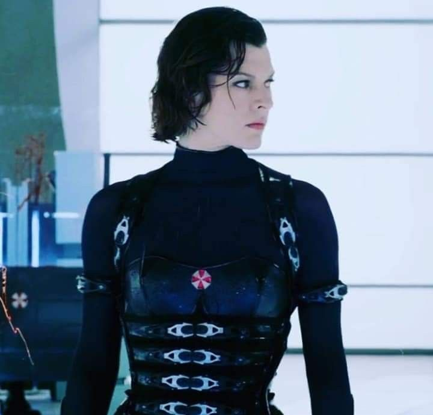

Alice Abernathy adalah protagonis utama dalam film Resident Evil. Ia adalah mantan petugas keamanan Umbrella Corporation yang berjuang melawan wabah zombie akibat eksperimen bioteknologi.
Ia dikenal karena kekuatan fisiknya, kemampuan bertahan, serta tekad untuk mengakhiri dominasi Umbrella.